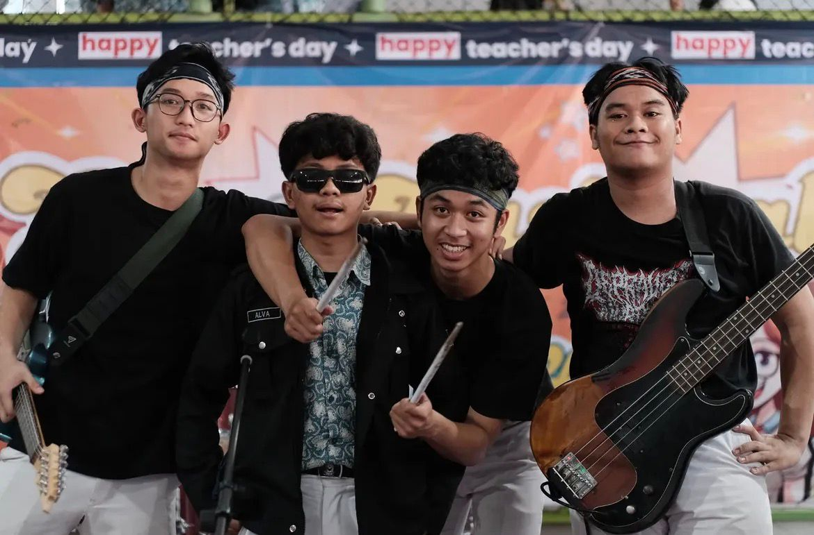

Chapter 01
Where Curiosity Began
2018 · Fifth GradeMy journey with music started in fifth grade when I first picked up a guitar and tried learning it on my own. After reaching a point where I felt stuck, I became even more curious about music and decided to learn classical piano with my neighbor for around four months. From there, most of my learning journey became self-taught again, including studying music theory and understanding music beyond simply playing instruments. Throughout middle school and high school, music became an important part of my life. I performed in school events and occasionally represented my school at external performances.
